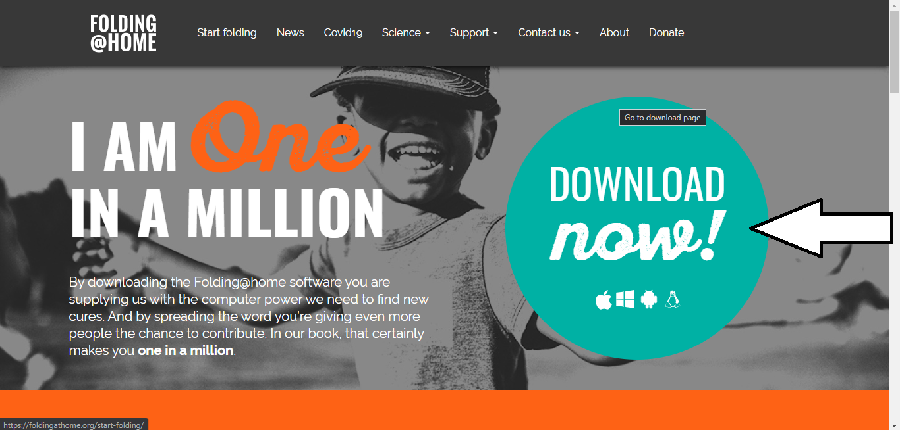
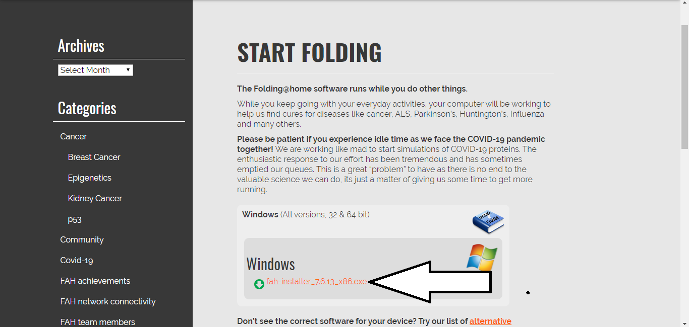
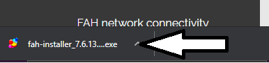
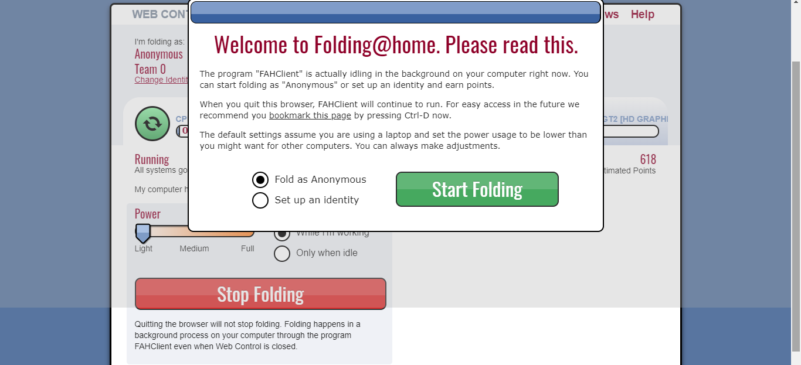

Manual de instalaciónVideotutorialPrimer PasoAbre tu navegador y dirígite a la página oficial de Folding at Home.Segundo PasoHaz click donde se muestra en la imagen.
Esto te llevará a otra página...
Tercer PasoHaz click en 'Download Now'.

Cuarto PasoAhora hacemos click en descargar para Windows.

Si utilizas Mac o Linux haz click en Alternative Downloads,
y ahi selecciona el instalador de tu sistema operativo.
Quinto PasoEjecutamos el instalador una vez se descargue.

InstalaciónPara completar la instalación aceptaremos las licencias y elegiremos la ruta donde queremos que se instale el programa. Sexto PasoAhora se abrirá el navegador y deberás elegir si quieres contribuir Anónimamente o con una identidad.

Una vez pulses 'Start Folding', tu ordenador empezará a trabajar.
Puedes establecer que trabaje cuando lo estés usando ('When I’m working')
o por el contrario, que trabaje cuando no estés ('When I’m Idle').